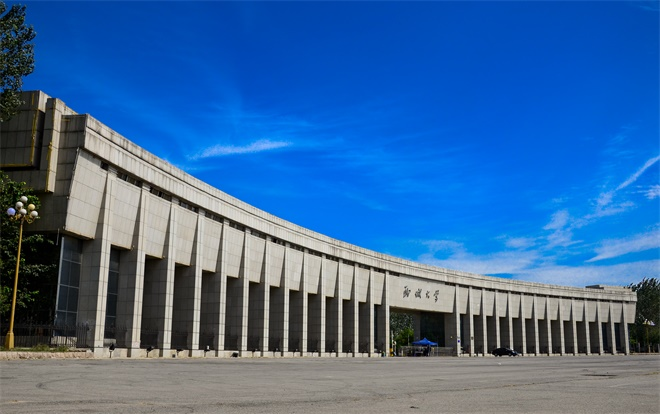
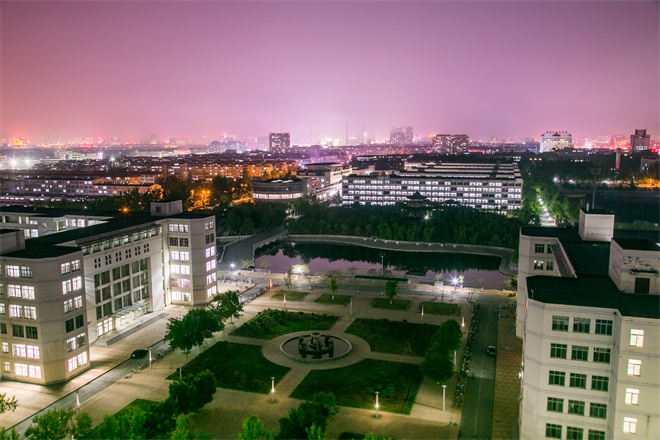

在威斯敏斯特教堂旁边，矗立着一块墓碑，上面刻着一段非常著名的话：“当我年轻的时候，我梦想改变这个世界；当我成熟以后，我发现我不能够改变这个世界，我将目光缩短了些，决定只改变我的国家；当我进入暮年以后，我发现我不能够改变我们的国家，我的最后愿望仅仅是改变一下我的家庭，但是，这也不可能。当我现在躺在床上，行将就木时，我突然意识到：如果一开始我仅仅去改变我自己，然后，我可能改变我的家庭；在家人的帮助和鼓励下，我可能为国家做一些事情；然后，谁知道呢?我甚至可能改变这个世界。
——题记
漫漫青春路，多少岔路口，青春蹉跎，机会错过。而我，庆幸遇上了聊城大学。
进入大学，我知道在喧嚣与浮躁社会的渲染下，大学也并非完全是一片净土。在这里，你会受到形形色色的诱惑，让你去消极，去悲催，去毫无作为。如何把握好自己的人生，如何去实现当初的理想，如何有足够的毅力去抵制诱惑，也许这种精神的培养比金钱更重要。我们有激情，有努力学习的信心，有拼劲与干劲，每天沉浸在书的海洋中，每天去做一些有意义的事情，让自己进步，让自己提高，何尝不是一种乐趣呢？！
我们生活在聊城大学中，我们或爱或恨，或兴奋或伤感，或自卑或自信，或失败或成功，而这所有的一切都发生在这里。学校不只是学校，更是我们曾经青春的摇篮，而青春当然不是单一的颜色，而是五颜六色的集合，而这正是生活的真谛与本质。